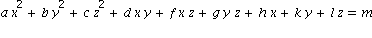
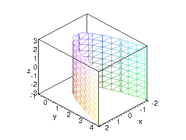
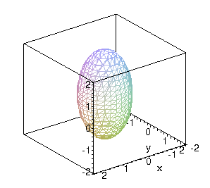
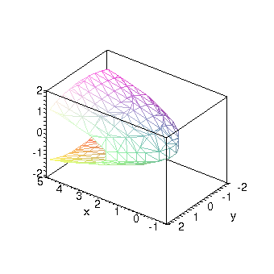
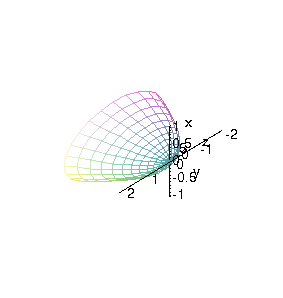
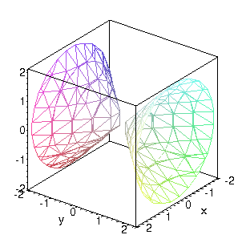
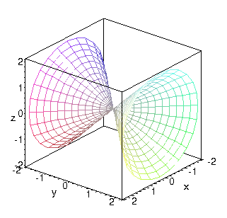
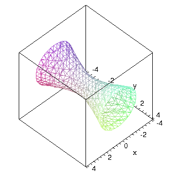
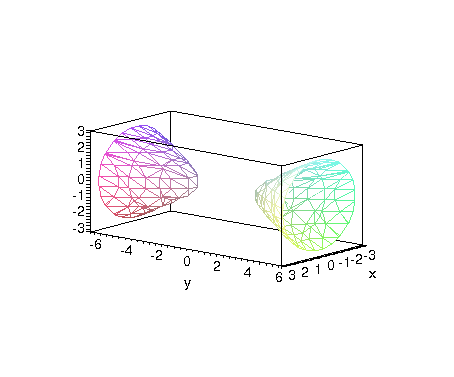
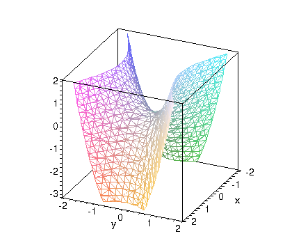

Cylinders and quadric surfaces
| > | restart; with(plots): |
Warning, the name changecoords has been redefined
A quadric surface is one defined by an equation that is quadratic in x, y, and z:

If through are all zero, a plane results. Follow in the textbook to see the general forms of the equations.
Read me
All the surfaces below can be plotted using implicitplot3d. The basic syntax is
| > | implicitplot3d( eqn, x=-a..a,y=-b..b,z=-c..c ); |
The equation is written just as you would on paper, e.g., x^2-y^2+2*z^2=2. The ranges tell what region of space to show.
However, there are two disadvantages to this method:
It may be slow, and
In some cases, it may produce an ugly or even misleading plot.
In a few of the examples there are different plotting commands to give a better view. Don't worry about learning those commands, just study the figures.
I recommend that you type or paste the commands into maple and run them, so that you can rotate the surfaces around and understand the pictures better.
The following line sets up plots for nice output.
| > | setoptions3d(axes=boxed,scaling=constrained,style=hidden); |
Cylinder
Any equation that is missing one variable generates a cylinder.
| > | implicitplot3d( y=x^2, x=-2..2,y=-1..4,z=-3..3 ); |

Ellipsoid
This is the 3D version of an ellipse, an "egg" with three principal axes. If all axes are equal, a sphere results.
| > | implicitplot3d(x^2+y^2/1+z^2/4=1, x=-2..2,y=-2..2,z=-2..2, grid=[21,21,21]); |

Paraboloid
This is a parabola in two planes and an ellipse in the third.
| > | implicitplot3d(2*x=y^2+4*z^2, x=-1..5,y=-2..2,z=-2..2 ); |

Here is a better version.
| > | plot3d([u^2/2,u*sin(phi),u*cos(phi)/2],u=-2..2,phi=0..2*Pi, axes=normal,labels=["x","y","z"]); |

Cone
| > | implicitplot3d(x^2+z^2=y^2, x=-2..2,y=-2..2,z=-2..2 ); |

Here the picture is really misleading. You can see a gap between the "two pieces." A real cone comes all the way together at a point. This is more accurate:
| > | plot3d([u*cos(v),u,u*sin(v)], u=-2..2,v=0..2*Pi, labels=["x","y","z"]); |

| > |
Hyperboloids
These come in two flavors: one-sheet and two-sheet.
| > | implicitplot3d(x^2-y^2/4+z^2=1, x=-4..4,y=-4..4,z=-4..4, grid=[21,21,21] ); |

Two sheets:
| > | implicitplot3d(y^2/4-x^2-z^2=1, x=-3..3,y=-6..6,z=-3..3 ); |

Saddle
This is the surface that has a "decreasing direction" and an "increasing direction".
| > | implicitplot3d(2*y^2-x^2=z, x=-2..2,y=-2..2,z=-3..2, grid=[21,21,21]); |
